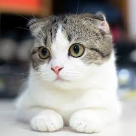

松江市東生馬町にある猫カフェで、店主はメインクーンのブリーダーでもあります。
看板猫の「やくも」くんをはじめとする個性豊かなスタッフ猫ちゃんたちが出迎えてくれます。
猫ちゃんをこよなく愛する方々が集う「猫好きさんの会」などのイベントも開催されています。
記念写真の撮影もでき、216円でプリントもしてくれますので、よい思い出になります。
また20時以降は予約制の貸切タイムとなっており、空きがあれば5名までなら18時頃までに連絡すると当日予約可能です。
ピノ♀（ぴのちゃん）H29.5月4日生まれ。とっても美人な女の子。マイペースでねこじゃらしが大好き。

フーガ♂マンチカン（手長）（ふっくん）H27年7月生まれ。くりくりお目目。猫じゃらしが大好きです。